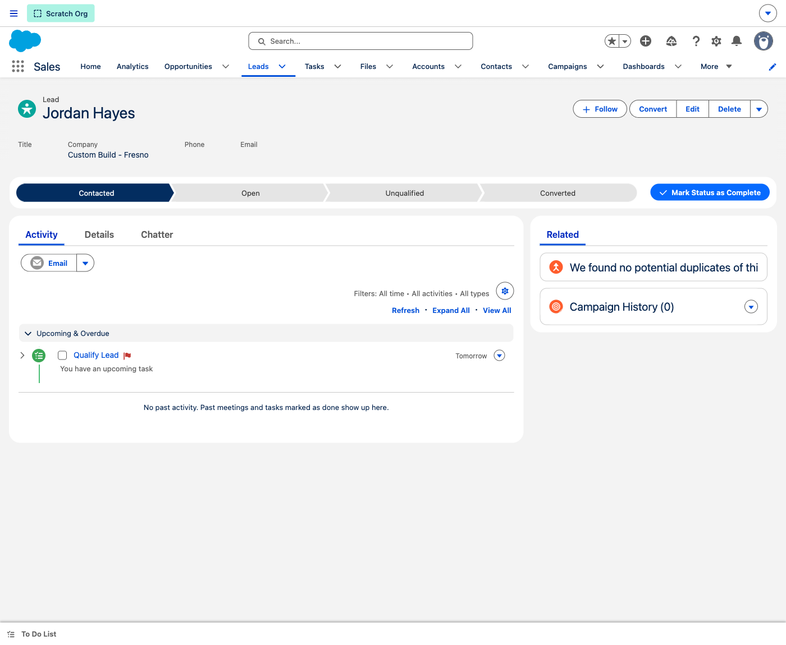
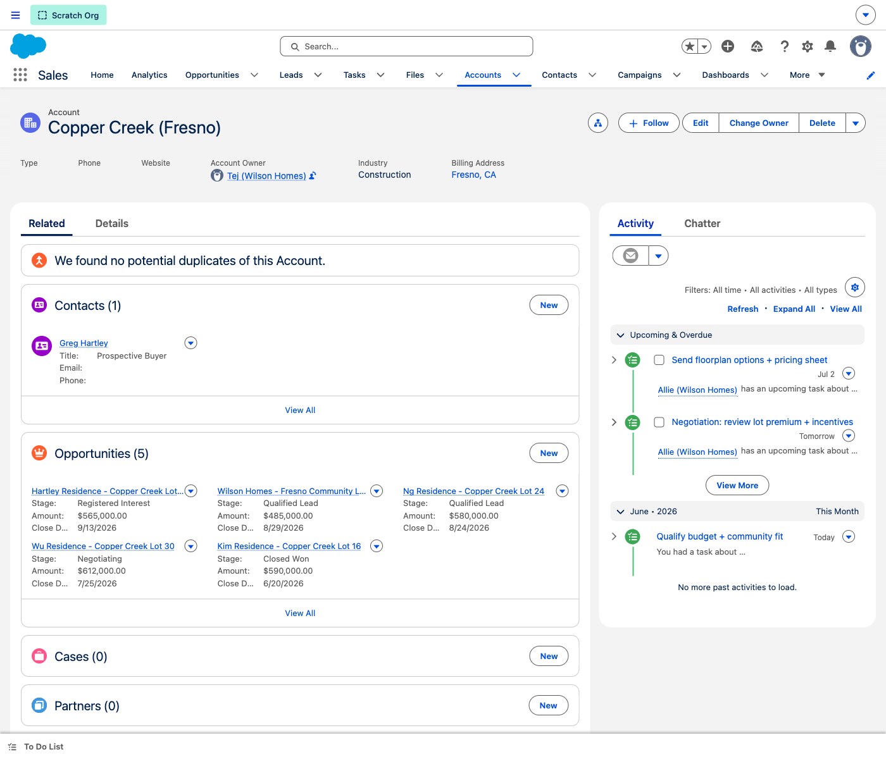
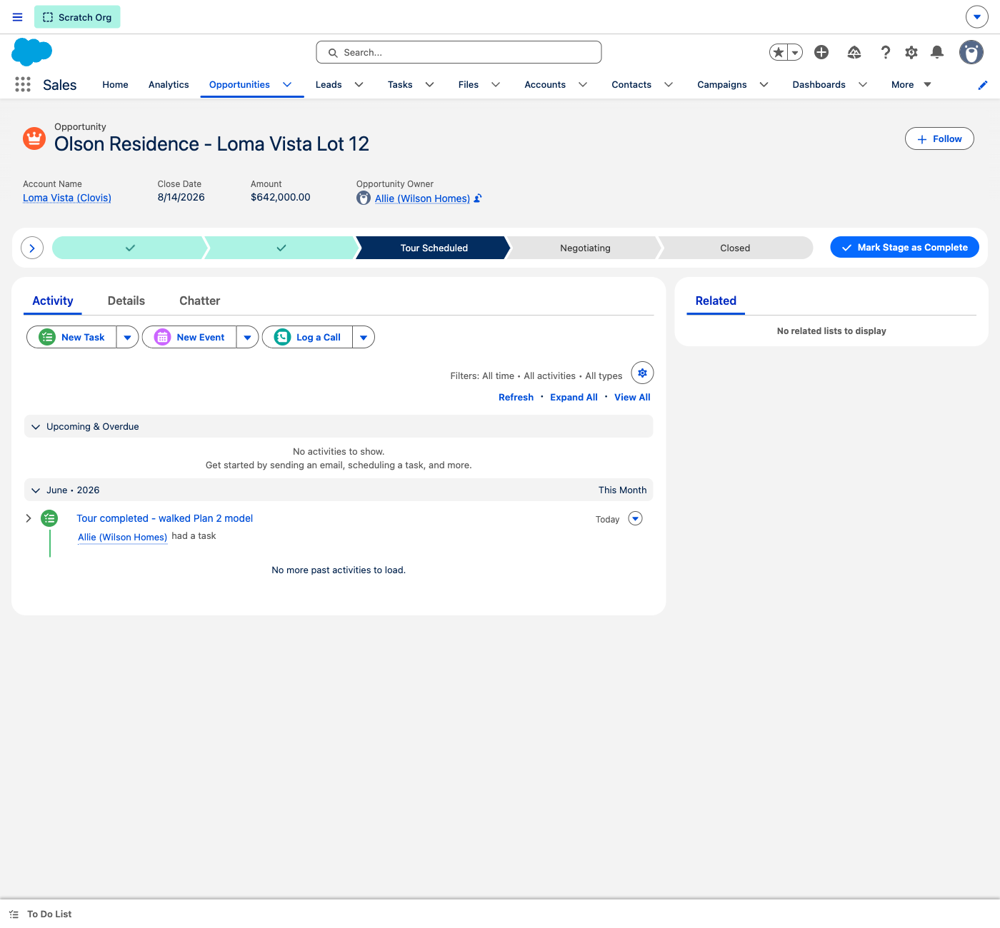
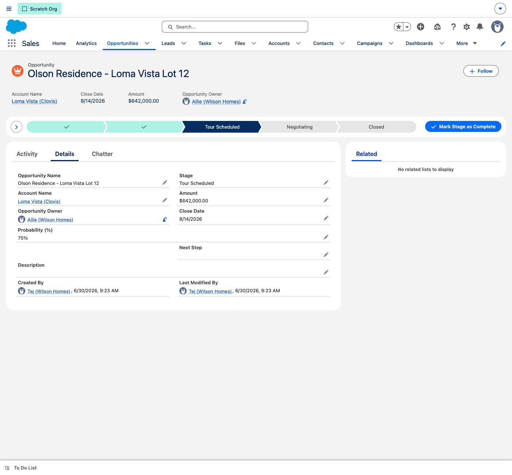
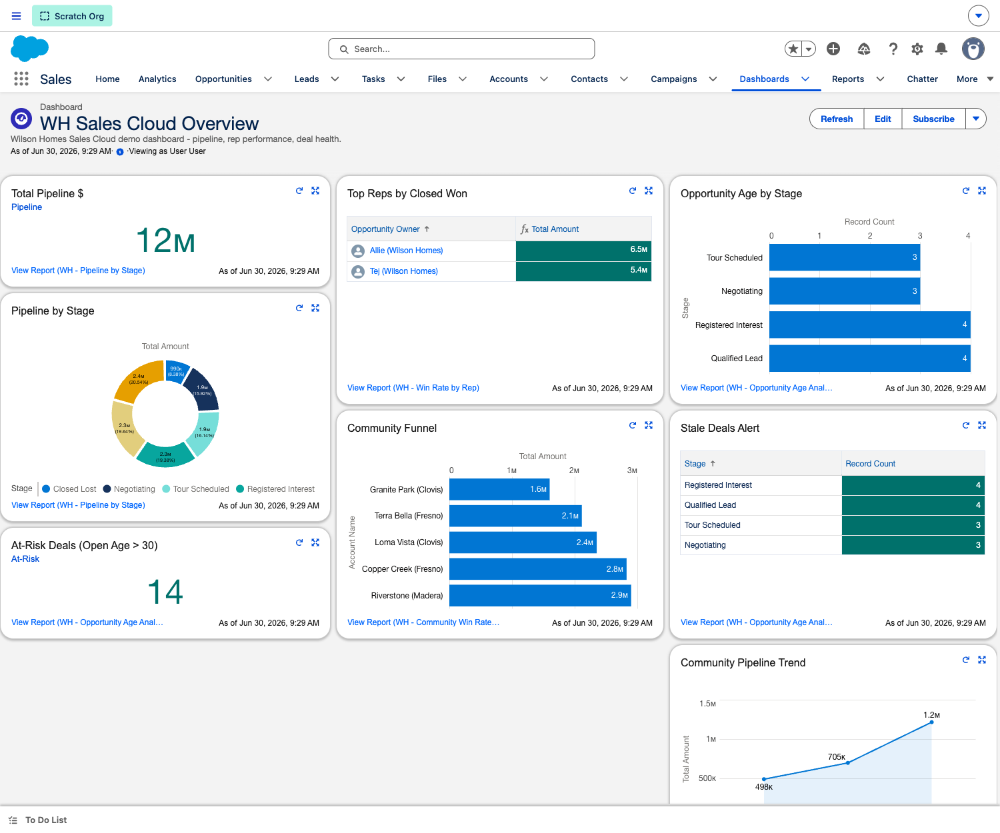

A day-in-the-life walkthrough of the Wilson Homes Salesforce trial — built for home builders. One central hub for the buyer journey, from first web inquiry through home tour to closed sale.
The 30-second context
Wilson Homes runs the buyer journey across fragmented tools — Lasso CRM for leads, Mailchimp for campaigns, and manual hand-offs between marketing and on-site sales staff. What you'll see today isn't a bespoke experiment — it's the proven model we've deployed with other home builders, built native Salesforce first and tailored to Wilson Homes after the foundation is set.
Each community is an Account; every home or lot deal is an Opportunity tied to it. Pipeline rolls up by community automatically.
A guided Sales Path walks every deal from Registered Interest to Closed Won — so reps always know the next step.
A live dashboard replaces spreadsheet stitching — pipeline, deal age, win rates, and community funnel in one place.
Open here · Validate first
Before a single screen, play back their world. It earns trust, confirms you understood them, and frames everything that follows as a proven pattern — not something invented for this one call. Lead with: "We've done this for other home builders. Here's what we heard about you, here's where you're a little different, and here's how we make you like everybody else."
→ Acknowledge the differences, then reinforce: the foundation is the same proven model — we simply mold it to fit.
Skip the technical configuration; tell an end-to-end customer story. What you're showing today is Chapter 1 — the foundation. Chapters 5–10 are where we build on it with AI lead qualification and deeper automation. "Here's the A-to-Z of how this works for you."
Position it as the standard we've proven across home builders — native Salesforce first, then tailored to Wilson Homes once the foundation is agreed. They want best practices and to get going fast, not an over-engineered custom build.
🎤 Presenter prep: have 2–3 home-builder client names & websites queued to paste into chat as live proof points (name-drop where NDAs allow). When you introduce a feature like lead ratings, anchor it: "This is something our other home builders rely on — so we incorporated it into yours too."
Pre-flight
Open the trial org in a clean browser window a few minutes before the call. The data below is already seeded — you don't need to create anything live.
The walkthrough
Five stops, roughly 12–15 minutes. Each follows the buyer's journey through the Wilson Homes pipeline.
Orientation
Before the click-through, ground the team in four objects. This is the mental model everything else hangs on.
💡 Talking point: "In Lasso, these live in different places and the hand-off is manual. In Salesforce it's one connected record — the inquiry, the community, the buyer, and the deal all link together, and reporting falls out of it for free."

"Let's follow one buyer end to end. They land on your website and fill out the 'Find Your Home' form. The instant they submit, two things happen: they get an automatic email saying someone from your team will reach out shortly — so no one goes cold — and the inquiry drops into Salesforce as a Lead, already tagged with their buyer type and community: 'Custom Build – Fresno'. It routes to the right on-site rep automatically and notifies them — no inbox, no manual sorting. When the rep qualifies it, one click turns it into a Contact and an Opportunity."
🔮 Future chapter (not Phase 1): today the lead routes straight to a salesperson. In a later chapter, an AI agent qualifies the high volume of website leads first — scoring and filtering them (Hot/Warm/Cold becomes the trigger) — then hands the qualified ones to a rep. Frame it as building on this foundation, not something we're doing today.

"Here's a single community. In one screen you see every buyer and every active home deal in Copper Creek — nobody has to pull a separate Lasso report to know what's happening in a neighborhood."

"This is the heart of it. Every home deal moves along the same visual path — Registered Interest, Qualified, Tour Scheduled, Negotiating, Closed Won. A new rep always knows exactly what stage a deal is in and what to do next."

"Everything that matters about the deal in one view — the community, the buyer, the amount, the close date, the next step. No more cross-checking Lasso against a spreadsheet to remember where a deal stands."
This POC uses standard Sales Cloud fields. Builder-specific fields (floorplan, lot, pre-approval status, etc.) are a fast follow-on once the team confirms the model.

"This is the payoff. Everything we just walked through rolls up here in real time — total pipeline, deals by stage, the community funnel, top reps, and aging deals. This is the view your sales leader opens every morning, and it's never out of date."
Reference
The five stages every home deal moves through. Use this to answer "what does each stage mean?"
Inquiry captured; buyer and community known, not yet qualified.
Budget, timeline, and community fit confirmed.
Model or lot walkthrough booked with the on-site team.
Lot premium, incentives, and terms under discussion.
Purchase agreement signed; hand-off to homeowner services.
What's configured
A focused Sales Cloud foundation — the model, the guided process, and the reporting layer.
| Area | What's built |
|---|---|
| Record type | Home Purchase — the Opportunity type for home/lot sales. |
| Sales Path | 5-stage guided path on Opportunity (Registered Interest → Closed Won). |
| Reports | 8 reports — Pipeline by Stage, Community Breakdown & Win Rates, Deal Velocity, Opportunity Age, Lead Source, Win Rate by Rep, Activity Summary. |
| Dashboard | WH Sales Cloud Overview — 8 tiles across pipeline, communities, reps, and aging. |
| Data model | Lead → Account (community) → Contact (buyer) → Opportunity (home deal). |
| Demo data | 5 communities · 20 home deals across all stages · buyer contacts · web-inquiry leads · logged activity. |
Quick reference
Copper Creek (Fresno) · Loma Vista (Clovis) · Riverstone (Madera) · Granite Park (Clovis) · Terra Bella (Fresno)
Registered Interest 4 · Qualified Lead 4 · Tour Scheduled 3 · Negotiating 3 · Closed Won 4 · Closed Lost 2
Appendix
Likely questions from the Wilson Homes team, and how to answer them.
We already use Lasso — why switch?"
"Lasso is great at lead capture, but your team is stitching it together with Mailchimp, spreadsheets, and manual hand-offs. Salesforce is one platform for the whole journey — and everything you saw rolls up into reporting with zero extra work."
Is this going to be complicated for on-site agents?"
"That's exactly why we led with the Sales Path. An agent doesn't need to learn the system — they follow the path. The screens you saw are the whole daily experience."
It doesn't have our floorplans or lot fields."
"Correct — this trial intentionally uses the standard model so we could stand it up fast and prove the flow. Builder-specific fields (floorplan, lot, pre-approval, website activity) are a quick configuration once you confirm the shape."
Can it track campaigns and website visits like our marketing stack?"
"Yes — that's the consolidation play. Web-to-Lead, campaign attribution, and marketing automation all connect to these same records, so marketing and on-site sales finally share one source of truth."